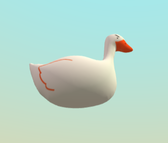
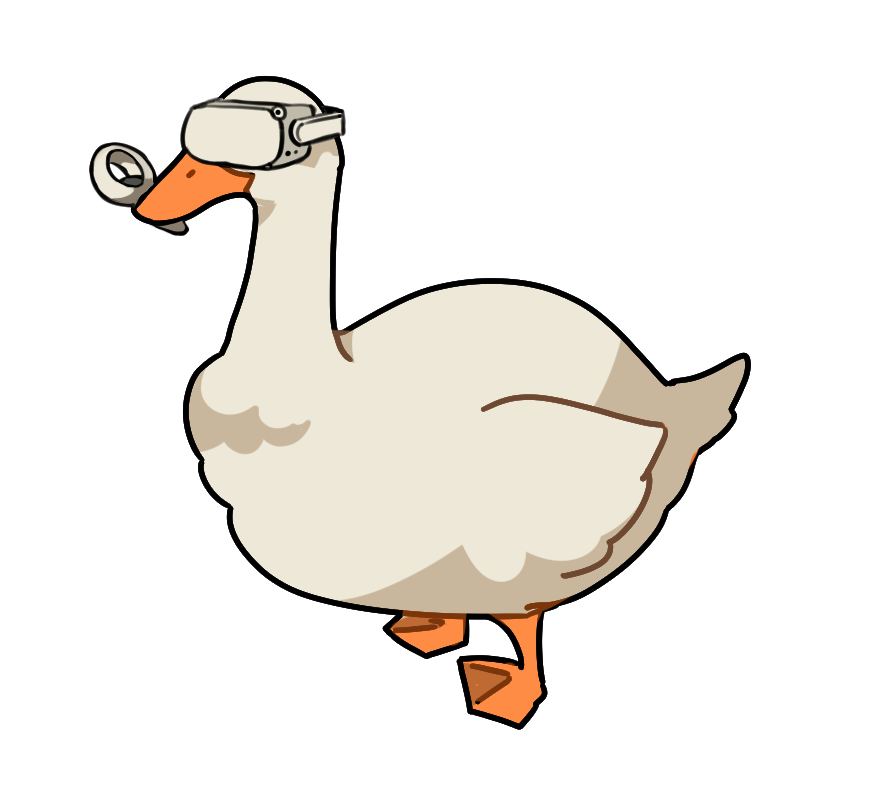

3Draw is the latest in a long series of thing-drawing games like skribbl.io or Gartic Phone. We stand out via our chaotic, AI-powered, voice-chat guessing system and largely dysfunctional artistic tools.
We used Cloudflare Tunnels for testing and deployment, WebXR for vieweing our project, and the A-Frame framework for interfacing. We used RTC to communicate between A-Frame instances via Networked A-Frame (NAF) and an EasyRTC instance. Modelling was done in Blender. To manage state, we created a chimera of various techniques that could be (generously) described as an amalgamation of MVC (fattest controllers you've ever seen) and React.
People who have mixed feelings about Geese. Ritik, Sasha, Samyok, Minnerva, Ben, and Andrew.
